Vorwort
Die Cybrans sind die dritte der drei Fraktionen, welche es in Supreme Commander 2 zu spielen gibt. Sie verkörpern die »Rasse« einer auf der Erde lebenden Bevölkerung. Die Fraktion ist darüber hinaus besonders durch ihre besonderen Features (später genannt) als Supporter anzusehen. Besonders durch das amphibientypische Verhalten, indem sich Landeinheiten auch im Wasser fortbewegen können sind sie besonders auf Maps mit einem großen Wasseranteil sehr stark.Kampagne
Um Spoiler zu vermeiden wird die Kampagne nur im groben Überblick geschildert!Eingesetzt um gegen die Aliens (die Erleuchteten) zu kämpfen gerät man in Konflikt mit seinen Kollegen insbesondere mit dem Commander. Daraufhin beginnt ein »Krieg innerhalb der eigenen Fraktion«, es kämpft also Mensch gegen Mensch. So entwickelt sich die aufregende Story und der Protagonist muss sich für oder gegen die UEF entscheiden.
Überblick
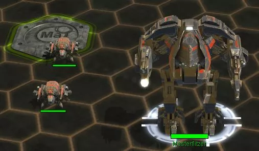 Im Multiplayer-Modus startet jeder Spieler immer mit zwei Technikern und seiner Kommandozentrale (kurz ACU) samt eines eigenen »Aufbauplatzes« inklusive 4 Masseablagerungen. So kann eine Grundlegende Versorgung hergestellt werden und es kommt zu keiner ungerechten Verteilung der Ressourcen.Basis Einheiten
ACU
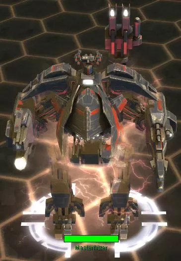 Die ACU (Armored Command Unit) ist die vom Spieler bemannte Kommandoeinheit. Sie ist vergleichbar mit der Größe eines Hochhauses, obwohl die Ingame-Maßstäbe schwer mit der Realität zu vergleichen sind. Von ihr aus wird der Anfang gesteuert und koordiniert, nicht zuletzt, da sie folgende Vorzüge aufweist:- Grundlegende Bewaffnung mit Explosiv-, MG- und Anti-Air-Geschützen
- 50% beschleunigtes Bautempo
- Rettungskapsel (Kopf absprengbar) als letzte Fluchtmöglichkeit
- Weitere erforschbare Features
- Bau aller Gebäude
Techniker
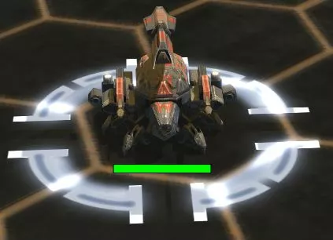 Der Techniker ist eine multifunktionelle Einheit, welche besonders für den Gebäudebau zuständig ist. Im Gegensatz zur ACU kann sie Gebäude langsamer bauen und hat weitaus weniger Special Features.Die Einheit kann in jeder normalen Fabrik gebaut und die somit die Anzahl der Techniker erweitert werden.
Land Einheiten
Grundsätzlich lässt sich sagen, dass die Rasse der Cybrans ziemlich schlechte Grundeinheiten besitzt. Stattdessen liegt ihre Stärke in den verschiedenen Prototypen, welche sehr nützlich sind.- Loyalist Sturmbot: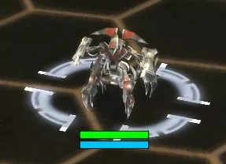 Der Loyalist ist vergleichbar mit dem Titan Sturmbot der United Earth Fraction. Er ist zudem die günstigste Einheit, was den Bau einer größeren Menge ermöglicht.
- Brackman Artillerie: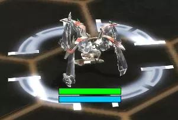 Der Brackman ist die Artillerie der Cybrans. Eine höhere Reichweite sorgt hierbei für eine gute Defensive, die jedoch anfällig für stationäre Geschütze oder Luftangriffe des Gegners ist.
- Cobra Raketenwerfer: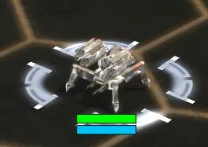 Ähnlich wie mit dem Brackman verhält es sich auch mit der Cobra. Ein Raketenwerfer, jedoch besonders für die Offensive geeignet.
- Adaptor: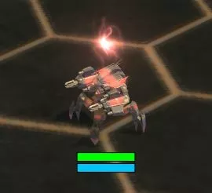 Der Adaptor ist so vielseitit, dass der Name schon eine ganze Zeile füllen würde. Er kann nämlich alles. Er besitzt ein Schild, wehrt Raketen ab und ist effektiv gegen Luft. So wird er zusätzlich als Luftabwehr eingesetzt.
Luft Einheiten
- Gemini: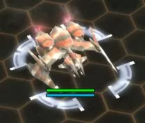 Hier beginnen dann auch die Unterschiede zwischen der UEF und den Cybrans. Während die United Earth Fraction nur über Jäger und Bomber verfügt haben die Gemini Flugzeuge diese Funktionen vereint. Sie gelten offiziell als »Jäger-Bomber« und können sich so nicht nur gegen Lufteinheiten so wie andere Flugzeuge wehren, sondern sind dazu noch effektiv gegen Bodentruppen und Gebäude.
-
Freier Nanit: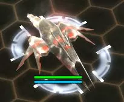
So effektiv der Gemini auch ist, so ineffizient ist auch
der Freie Nanit. Dieser verfügt über keinerlei Waffen-
oder Abwehrsysteme und gilt als Aufklärungsflugzeug.
Kaum bei der feindlichen Basis angekommen, wird er
jedoch vom Himmel geholt und hat somit keinen Mehrwert
für den Spieler. Besonders, da der Luftaufklärer noch
dazu ziemlich teuer für seine Funktionen ist.
Funfact: Verlässt man sich auf den Forschungsbaum, so heißt der Freie Nanit gar nicht freier Nanit sondern »Intellitron». Dieser Name taucht aber an keiner anderen Stelle im Spiel auf. - Renegade: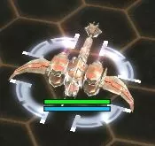 Das Renegade ist ein normales Gunship. Es lässt sich kaum ein Unterschied zu dem des Menschen erkennen.
- Libelle: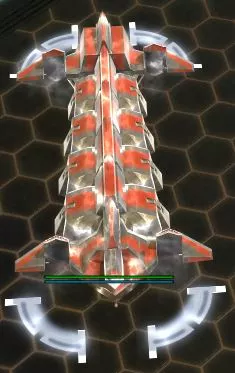 Die Libelle ist das größte Flugzeug, welches in der Luftbaubrücke hergestellt werden kann. Der Transporter kann sich nur schwer gegen Boden-Luft- oder Luft-Luft-Abwehr wehren und benötigt daher meistens anderweitigen Schutz. Außerdem kann eine Fährverbindung hergestellt werden.
Land Prototypen
- Reflektorschild: 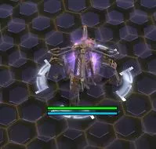 Der Reflektorschild ist mit einem normalen Schildgenerator vergleichbar. Der Unterschied liegt dabei an der Mobilität. Er kann sich nämlich bewegen und die Einheiten im Kampf schützen. Auch verfügt er über die Möglichkeit, sich aufzuladen und dann, wenn nötig eine Schockwelle auszustoßen, welche Schaden zufügt. Sonst verfügt es jedoch über keine Waffensysteme und ist eine unterstützende Einheit.
- Zikade: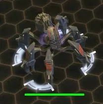 Die Zikade sieht aus wie eine mechanische Blume und hat die Möglichkeit, die Einheiten, welche unter ihr stehen unsichtbar zu machen. Der Gegner weiß daher nicht, mit welcher Offensive er es zu tun hat und kann sich daher schlechter vorbereiten.
- Megalith Ⅱ: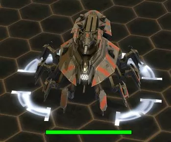 Der Megalith ist einer der drei Sturm-Prototypen, welche es unter der Cybran-Flagge gibt. Er verfügt über eine relativ gute Kanone, ist jedoch durch viele Land- und Lufteinheiten einfach zu stoppen.
- Cybranasaurus Rex: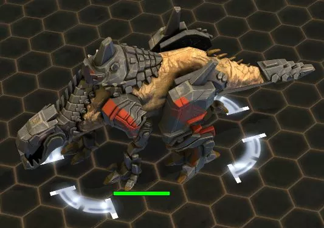 In der deutschen Fassung des Spiels ist er wirklich als solcher zu finden. Das Wort ist eine Mischung aus dem Dinosaurier „Tyrannosaurus Rex“ und der Fraktion der „Cybrans“. Ein großer Dinosaurier, welcher Feuerspeiend Flächenschaden austeilt und vieles einstecken kann, ist ein großes Problem für den gegnerischen Spieler. Leider ist dieser Prototyp besonders anfällig für jegliche Lufteinheiten und sollte daher immer mit Luftabwehr eingesetzt werden.
- Affenkönig: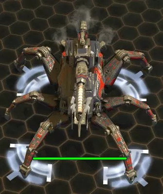 Der Affenkönig hat zwar nicht viel mit einem Affen gemeinsam und ähnelt eher einer Spinne, verfügt aber trotzdem über große zerstörerische Kraft. Die Ausmaße seiner Kanone lassen grob erahnen, wie mächtig der Affenkönig ist. Allerdings ist er sehr teuer und hat eine lange Bauzeit.
Luft Prototypen
- Riesentransporter: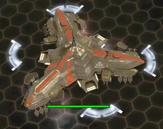 Dieser Lufttransporter kann nun auch andere Prototypen wie z.B. den Affenkönig transportieren, um diesen schneller an die Front oder sogar hinter feindliche Linien zu bringen. Außerdem ist das Einheitenlagerungsmaximum bei 75.
- Soulripper Ⅱ: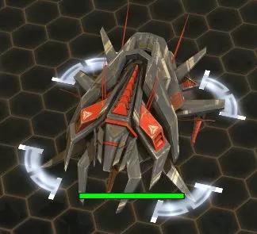 Dieser Gunship-Prototyp ist wie das normale Gunship besonders effektiv gegen Gebäude und Einheiten. Sein Problem ist mal wieder die Luft-Luft-Verteidigung der Gegner, da sich der Sturmflieger kaum gegen Jäger zur Wehr setzen kann.
Gebäude Prototypen
Hier gibt es tatsächlich nur einen Prototypen.- Magnetron: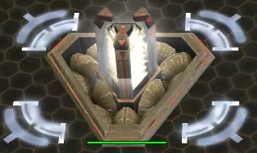 Dieser ist ein Gebäude, welches im aufgeladenen Zustand alle feindlichen Einheiten an sicher heranziehen kann und Schaden verursacht, sobald Einheiten mit ihm in Berührung kommen. Auch gibt es die Möglichkeit, alle feindlichen Einheiten wegzustoßen, um für kurze Zeit eine feindliche Offensive aufzuhalten.